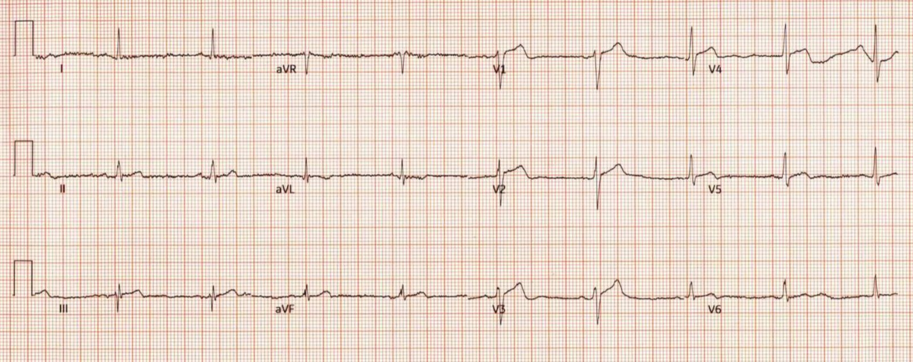
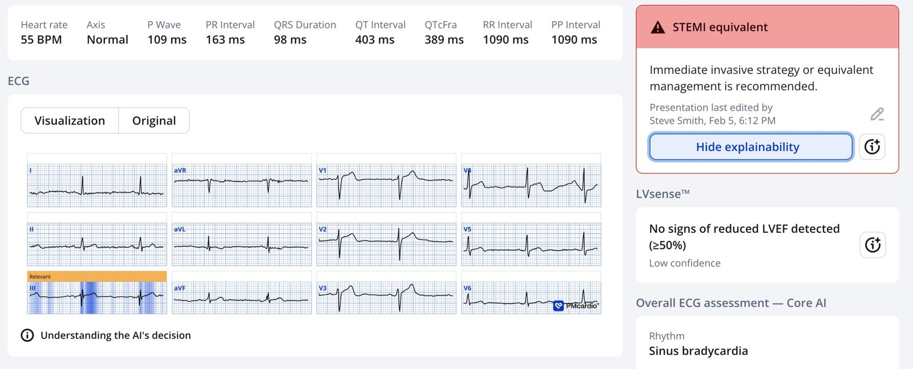
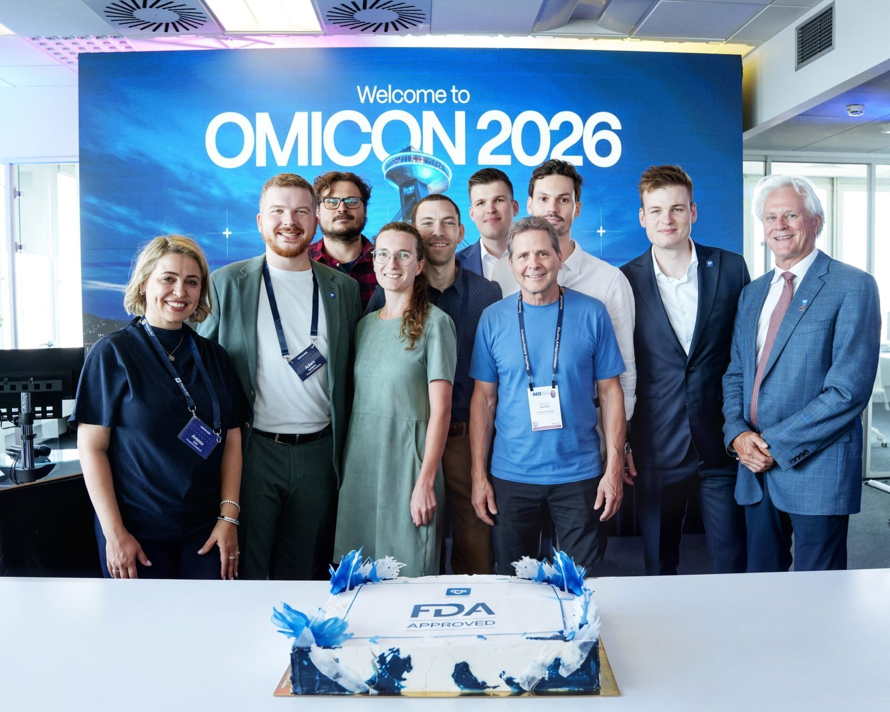
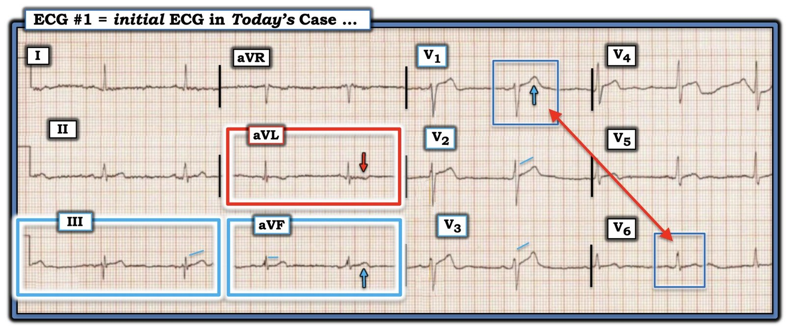

19/09/2026 — Queen of Hearts nay đã được FDA phê duyệt!! Nữ hoàng nhận định gì về điện tâm đồ “không chẩn đoán” này?
Bản dịch tiếng Việt của bài "Queen of Hearts Now FDA Approved!! What’s her take on this “Non-diagnostic” ECG?" – Dr. Smith’s ECG Blog. Giữ nguyên toàn bộ 5 hình ảnh của bản gốc.

Lần đầu tiên trên thế giới FDA cấp phép cho một giải pháp điện tâm đồ dùng AI được thiết kế để phát hiện các cơn đau tim cấp cần bác sĩ tim mạch xem xét khẩn, cho phép triển khai trên quy mô lớn tại các hệ thống y tế Hoa Kỳ.
https://www.powerfulmedical.com/pmcardio-stemi
Xem thông báo bên dưới. Các hệ thống y tế Hoa Kỳ quan tâm đến việc triển khai mô hình Queen of Hearts đã được FDA cấp phép có thể liên hệ với đội ngũ Powerful Medical để trao đổi về việc tích hợp và triển khai trên toàn tổ chức.
Queen of Hearts có thể cứu sống người bệnh không? Bạn hãy tự quyết định.
Hãy xem ca này:
Điện tâm đồ này được một bác sĩ nội trú cũ gửi cho tôi, không kèm thông tin gì.


Bạn nghĩ gì?
Tôi trả lời: “Chẩn đoán nhồi máu cơ tim do tắc (OMI) thành dưới.”
Anh ấy gọi cho tôi và có vẻ khá sửng sốt khi hỏi: “Điều gì khiến thầy nói vậy?”
Tôi nói: “Hãy nhìn chuyển đạo III và aVF, kèm ST chênh xuống soi gương (reciprocal) ở aVL. Còn có sóng T tối cấp (hyperacute T waves) ở V1-V3, nên đây nhiều khả năng là tắc RCA đoạn gần kèm nhồi máu thất phải (đoạn gần so với nhánh bờ thất phải).”
Câu trả lời của anh ấy: “Đúng vậy, đó là tắc RCA đoạn gần.” Rồi anh ấy kể cho tôi nghe câu chuyện.
Trình bày ca bệnh:
Một người đàn ông 45 tuổi đến khám vì đau ngực. Điện tâm đồ trên được ghi. Nó được máy tính và các bác sĩ đọc là bình thường.
_________
Ca bệnh tiếp diễn
Bệnh nhân được làm 2 lần troponin I độ nhạy cao, cả hai đều ở mức 24 ng/L (dưới giới hạn tham chiếu trên – URL).
Không ghi thêm điện tâm đồ nào.
Bệnh nhân được cho xuất viện.
Một thời gian sau, anh ta được xe cấp cứu đưa đến trong tình trạng ngừng tim, rung thất (ventricular fibrillation).
Đạt được ROSC (tái lập tuần hoàn tự nhiên) sau một cuộc hồi sức kéo dài.
Chụp mạch vành xác nhận tắc RCA cấp.
Sau đó có một buổi hội chẩn ca bệnh. Tất cả các bác sĩ, cả bác sĩ tim mạch lẫn bác sĩ cấp cứu, đều cho rằng điện tâm đồ này “không chẩn đoán”. Khi bạn tôi kể cho họ nghe ý kiến của tôi, họ gạt đi.
Tôi nghe điều này suốt từ những người đang chối bỏ:
“Nếu tôi không thấy được thì nó không tồn tại.”
Đó là lý do vì sao thật tốt khi có một trọng tài trung lập, không thiên kiến: Mô hình AI điện tâm đồ PMCardio Queen of Hearts:


Điện tâm đồ này CÓ GIÁ TRỊ CHẨN ĐOÁN tổn thương thành dưới. Chỉ có thể tin vào troponin khi điện tâm đồ hoàn toàn không có dấu hiệu thiếu máu cục bộ.
Giá trị số mà Nữ hoàng đưa ra là 0.73. Các giá trị trong khoảng 0.67 đến 0.83 có độ đặc hiệu 98%. Vì vậy Nữ hoàng RẤT chắc chắn rằng đây là OMI (còn được gọi là “tương đương STEMI”).
= = =
Thêm các ca “điện tâm đồ không chẩn đoán” mà lẽ ra Queen of Hearts đã có thể chẩn đoán là OMI, một số ca có kết cục tồi tệ. Trên blog này có đến hàng chục ca như vậy.
Các điểm cần học:
- Không phải điện tâm đồ “không chẩn đoán”. Mà chính người bác sĩ mới “không chẩn đoán”
- Chỉ vì BẠN không thấy, không có nghĩa là nó không có giá trị chẩn đoán. Điều đó có nghĩa là BẠN không chẩn đoán được.
- Ai cũng cần RẤT NHIỀU sự khiêm tốn. Nhận ra OMI trên điện tâm đồ có thể cực kỳ khó và hầu như không ai thực sự là chuyên gia trong cả việc nhận ra OMI lẫn việc nhận diện các hình ảnh giả OMI.
- Ai cũng cần Queen of Hearts. Chính những điện tâm đồ trông bình thường là lúc bạn cần Nữ hoàng nhất, vì đó là những điện tâm đồ mà bạn dễ bỏ sót hoàn toàn nhất.
- Nghiên cứu: cả bác sĩ tim mạch lẫn bác sĩ cấp cứu (EP) đều bỏ sót rất nhiều điện tâm đồ OMI và cũng chẩn đoán quá mức những điện tâm đồ không phải OMI. Trong nghiên cứu này, 53 bác sĩ cấp cứu và 45 bác sĩ tim mạch có độ chính xác trung bình như nhau là 65%, trong khi Nữ hoàng có độ chính xác 89%.
- Nữ hoàng là kết quả của nhiều năm đam mê (của Pendell và của tôi) với điện tâm đồ trong tắc động mạch vành cấp, riêng tôi là hơn 35 năm.


Lần đầu tiên trên thế giới FDA cấp phép cho một giải pháp điện tâm đồ dùng AI được thiết kế để phát hiện các cơn đau tim cấp cần bác sĩ tim mạch xem xét khẩn, cho phép triển khai trên quy mô lớn tại các hệ thống y tế Hoa Kỳ
New York, Hoa Kỳ – ngày 15 tháng Chín năm 2026 – Powerful Medical, một công ty hàng đầu về chẩn đoán tim mạch dựa trên AI, hôm nay thông báo rằng Cục Quản lý Thực phẩm và Dược phẩm Hoa Kỳ (FDA) đã cấp phép De Novo cho Queen of Hearts (Mô hình AI điện tâm đồ cho ACS). Mô hình chạy bằng AI này được thiết kế để nhận diện các dấu hiệu điện tâm đồ gợi ý hội chứng vành cấp (ACS) khẩn cấp, có thể bao gồm nhồi máu cơ tim ST chênh lên (STEMI) và các tương đương STEMI, đồng thời thông báo khẩn cho bác sĩ lâm sàng về các ca nghi ngờ.
Nhồi máu cơ tim vẫn là một trong những nguyên nhân tử vong hàng đầu, cứ mỗi 40 giây lại có một bệnh nhân ở Hoa Kỳ mắc phải. Chẩn đoán nhanh là yếu tố then chốt để cải thiện khả năng sống còn. Mặc dù điện tâm đồ (ECG) là công cụ chẩn đoán chính, việc đọc điện tâm đồ theo chuẩn chăm sóc thông thường thường không phát hiện được một tỷ lệ đáng kể các cơn nhồi máu cơ tim cấp, đặc biệt là các tương đương STEMI, dẫn đến chậm trễ điều trị cứu mạng. Queen of Hearts đã và đang lấp đầy khoảng trống này ở châu Âu, nơi sau khi được gắn dấu CE, mô hình đã phát hiện hơn 120,000 cơn nhồi máu cơ tim trong năm 2025, góp phần rút ngắn thời gian điều trị ở hơn một nửa số ca này.
Tiếp theo việc mô hình được công nhận là Thiết bị Đột phá (Breakthrough Device Designation) vào tháng Ba năm 2025 và được đưa vào Chương trình Tư vấn Toàn bộ Vòng đời Sản phẩm (TAP) của FDA, Powerful Medical đã nhận được cấp phép De Novo của FDA, qua đó thiết lập một phân loại thiết bị mới cho các mô hình AI điện tâm đồ nhắm đến những chẩn đoán tim mạch cấp tính, đe dọa tính mạng, và khẳng định sự công nhận công nghệ này là một bước tiến có ý nghĩa so với các công cụ chẩn đoán hiện có.
“Cột mốc này phản ánh sứ mệnh của chúng tôi là bảo đảm mọi bệnh nhân đều được tiếp cận chẩn đoán nhồi máu cơ tim nhanh và chính xác, bất kể họ đến khám ở đâu,” Martin Herman, Giám đốc điều hành (CEO) kiêm Đồng sáng lập Powerful Medical, cho biết. “Với cấp phép De Novo của FDA, chúng tôi có thể mở rộng việc áp dụng và đưa công nghệ này vào chăm sóc lâm sàng thường quy trên khắp Hoa Kỳ.”
Queen of Hearts được hậu thuẫn bởi hơn 20 nghiên cứu đã qua bình duyệt, bao gồm các thử nghiệm ngẫu nhiên có đối chứng (RCT) trên các tạp chí tim mạch có tầm ảnh hưởng cao, với hơn 40,000 bệnh nhân trên bốn châu lục. Dữ liệu đã công bố cho thấy độ nhạy cao hơn khoảng gấp đôi so với chuẩn chăm sóc thông thường, cùng với số dương tính giả ít hơn tới năm lần và thời gian đến điều trị nhanh hơn. Queen of Hearts giúp nhận diện sớm những bệnh nhân nghi ACS, những người được lợi từ việc hội chẩn tim mạch sớm và thông tim sớm.
“Nhiều bệnh nhân nhồi máu cơ tim ở Hoa Kỳ vẫn bỏ lỡ khung thời gian điều trị cứu mạng do chậm trễ chẩn đoán và phân loại kém hiệu quả,” Robert Herman, MD, PhD, Giám đốc Y khoa kiêm Đồng sáng lập Powerful Medical, cho biết. “Giờ đây khi đã có công nghệ được FDA phê duyệt, chúng tôi có thể lấp khoảng trống này bằng cách đưa việc đọc điện tâm đồ chính xác, theo thời gian thực đến ngay lần tiếp xúc y tế đầu tiên.” Felix Bauer, Giám đốc vận hành (COO) kiêm Đồng sáng lập, bổ sung.
Với việc FDA tái phân loại De Novo cho Queen of Hearts, Powerful Medical đang đẩy nhanh việc triển khai tại Hoa Kỳ nền tảng PMcardio—một nền tảng điều phối chăm sóc tim mạch toàn diện dựa trên AI được xây dựng cho các hệ thống y tế, tích hợp việc đọc điện tâm đồ xuyên suốt từ giai đoạn trước viện, khoa cấp cứu đến chuyên khoa tim mạch. Nền tảng PMcardio nhúng các Mô-đun AI điện tâm đồ như Queen of Hearts trực tiếp vào quy trình lâm sàng hiện có, cho phép đánh giá có hỗ trợ AI ngay từ lần tiếp xúc bệnh nhân đầu tiên và chuyển giao liền mạch sang chuyên khoa tim mạch—giúp rút ngắn thời gian đến tái tưới máu, nâng cao chất lượng và cải thiện kết cục của bệnh nhân.
Các hệ thống y tế Hoa Kỳ quan tâm đến việc triển khai mô hình Queen of Hearts đã được FDA cấp phép có thể liên hệ với đội ngũ Powerful Medical để trao đổi về việc tích hợp và triển khai trên toàn tổ chức.
= = =
==================================
BÌNH LUẬN CỦA TÔI, bởi KEN GRAUER, MD (9/19/2026):
Ca hôm nay chứa đầy những bài học quan trọng:
- Đừng bỏ qua bệnh sử! Người đàn ông 45 tuổi này đến một cơ sở cấp cứu vì CP mới xuất hiện (Chest Pain – đau ngực). Do đó, theo định nghĩa — anh ta cần được làm ít nhất 2 điện tâm đồ và 3 lần Troponin.
- Troponin chỉ là một chiếc gương chiếu hậu không hoàn hảo phản ánh các diễn biến hiện tại. Chúng tôi đã trình bày nhiều ca OMI cấp trong đó giá trị Troponin độ nhạy cao lần 1 không tăng.
- Ca hôm nay nhắc chúng ta rằng đôi khi — cả giá trị Troponin lần 1 và lần 2 đều có thể chưa tăng ở một bệnh nhân bị OMI cấp.
- Đọc điện tâm đồ ở mức chuyên gia đòi hỏi chú ý đến các nguyên tắc về hình dạng và tính tương xứng (proportionality). Tiếc thay — cả hai thông số điện tâm đồ này đều bị bỏ qua trong ca hôm nay (như tôi làm nổi bật bên dưới trong Hình 1).
- “Hai cái đầu tốt hơn một!” Xét đến hậu quả tiềm tàng của việc bỏ sót một OMI cấp trên điện tâm đồ ban đầu của bệnh nhân — rất đáng để có ý kiến thứ 2 từ một nguồn chuyên gia (tức là, bệnh nhân hôm nay bị rung thất (VFib) vì OMI của anh ta bị bỏ sót khi không có ý kiến từ một nguồn chuyên gia).
- Ưu điểm của việc dùng QOH (Queen-Of-Hearts) làm ý kiến thứ 2 “ưu tiên” của bạn là:
- i) QOH sẵn có ngay khi điện tâm đồ vừa được ghi;
- ii) Độ chính xác vượt trội của QOH trong nhận diện các OMI tinh tế (đặc biệt trong những ca mà các dấu hiệu điện tâm đồ kín đáo — như ca hôm nay cho thấy).
= = =
Điện tâm đồ ban đầu hôm nay:
Để cho rõ, trong Hình 1 — tôi đã sao lại và đánh dấu các dấu hiệu MẤU CHỐT trên điện tâm đồ ban đầu hôm nay:
- “Mắt” tôi lập tức bị thu hút bởi sóng T đảo ngược kín đáo-nhưng-có-thật ở chuyển đạo aVL (trong hình chữ nhật ĐỎ). Ở một bệnh nhân đau ngực mới xuất hiện (CP – Chest Pain) có điện tâm đồ ban đầu biểu hiện thay đổi ST-T đáng ngờ ở một hoặc nhiều chuyển đạo dưới — sóng T đảo ngược bất ngờ này ở chuyển đạo aVL có thể là một thay đổi soi gương báo hiệu OMI cấp.
- Một sóng Q kín đáo cũng thấy ở chuyển đạo aVL — dù lúc đầu tôi không chắc điều này có ý nghĩa hay không.
- Sau khi thấy sóng T đảo ngược ở chuyển đạo aVL — “mắt” tôi chuyển tiếp sang ST thẳng đuỗn kín đáo-nhưng-có-thật (ST segment straightening) ở chuyển đạo III và aVF (trong các hình chữ nhật XANH). Sự khác biệt nhẹ về hình thái ST-T giữa 2 phức bộ QRST ở mỗi chuyển đạo này khiến tôi băn khoăn không biết nhát nào là thật — nhưng cả hai phức bộ QRST ở chuyển đạo III và aVF đều trông đáng ngờ (với ST thẳng đuỗn và gợi ý kín đáo một sóng T không tương xứng so với kích thước nhỏ của sóng R ở các chuyển đạo này).
- Nhận định của tôi từ các chuyển đạo chi ở bệnh nhân đau ngực mới xuất hiện này — là điện tâm đồ này đáng ngờ nhưng chưa có giá trị chẩn đoán. Và rồi tôi nhìn thấy các chuyển đạo trước ngực:
- Sóng T ở chuyển đạo V1 chắc chắn không “bình thường” (tức là, rõ ràng quá cao và quá đầy đặn so với kích thước nhỏ của sóng S ở chuyển đạo này).
- Chuyển đạo V2 và V3 đều biểu hiện ST thẳng đuỗn kín đáo-nhưng-có-thật — thay vì ST chênh lên nhẹ, dốc lên thoai thoải như bình thường vẫn thấy ở 2 chuyển đạo này.
- Có “mất cân đối” sóng T ở các chuyển đạo trước tim (Xem bên dưới).
= = =
Hình 1: Tôi đã đánh dấu các dấu hiệu MẤU CHỐT trên điện tâm đồ ban đầu hôm nay.


= = =
“Mất cân đối” sóng T ở các chuyển đạo trước tim (T wave imbalance) …
Theo Bình luận của tôi ở cuối trang trong bài ngày 1 tháng Sáu năm 2022 — Khi sóng T ở mỗi chuyển đạo trước ngực đều dương (như trên điện tâm đồ #1) — sóng T ở chuyển đạo V1 thường không cao hơn sóng T ở chuyển đạo V6. Tuy nhiên, sóng T ở chuyển đạo V1 trong Hình 1 rõ ràng cao hơn nhiều so với sóng T ở chuyển đạo V6.
- Sự “mất cân đối” này của sóng T ở các chuyển đạo trước tim không hay gặp lắm — và trong bối cảnh lâm sàng “phù hợp”, nó đã được ghi nhận có liên quan với OMI gần đây do động mạch thủ phạm là động mạch mũ trái (LCx) (Xem Manno và cs.: JACC 1:1213, 1983 — và bài ngày 17 tháng Bảy năm 2013 của Salim Rezaie trên ALiEM).
- Xin nhấn mạnh: Điều này không có nghĩa là sóng T cao, dương ở chuyển đạo V1 không thể đôi khi là kết quả của một biến thể tái cực hoặc là hình ảnh phản chiếu của “tăng gánh” thất trái mà đôi khi có thể thấy ở các chuyển đạo trước.
- Thay vào đó, điều này chỉ đơn giản muốn nói rằng đôi khi — tôi thấy việc nhận ra một sóng T cao, dương ở chuyển đạo V1 rõ ràng cao hơn sóng T ở chuyển đạo V6 là một manh mối dẫn tới hội chứng vành cấp mà nếu không có nó có lẽ tôi đã không nhận ra (Để xem thêm 2 ví dụ về dấu hiệu này — Xem Bình luận của tôi ở cuối trang trong bài ngày 23 tháng Mười năm 2020 — và trong bài ngày 26 tháng Ba năm 2022 trên Dr. Smith’s Blog).
- Nếu là một dấu hiệu đơn độc — có lẽ tôi sẽ không bận tâm nhiều về sóng T ở chuyển đạo V1 trên điện tâm đồ #1 (tự nó, ở một bệnh nhân không triệu chứng, có thể là một biến thể bình thường).
- NHƯNG trong bối cảnh lâm sàng của bệnh nhân hôm nay, người đến ED vì đau ngực mới xuất hiện kèm theo: i) Các dấu hiệu đáng ngờ đã mô tả ở trên tại 3 chuyển đạo chi; — ii) ST thẳng đuỗn kín đáo-nhưng-có-thật ở các chuyển đạo V2,V3; và, iii) Sóng T cao không tương xứng ở chuyển đạo V1, đi kèm “mất cân đối” sóng T ở các chuyển đạo trước tim (T ở V1>V6) — tôi nghi ngờ một biến cố cấp đang tiến triển cho đến khi chứng minh được điều ngược lại.
= = =
Bài học MẤU CHỐT: Ngay cả khi bạn chưa bị bệnh sử (đau ngực cấp – CP) và điện tâm đồ ban đầu thuyết phục về sự cần thiết phải thông tim sớm — chỉ một bước đơn giản là ghi lại điện tâm đồ trong vòng 10 đến 20 phút rất có thể đã cho thấy đủ thay đổi “động” để ủng hộ việc cần thông tim sớm.
- Sử dụng QOH làm ý kiến thứ 2 trong việc đọc điện tâm đồ ban đầu hôm nay lẽ ra đã có thể đưa ra câu trả lời tức thì hơn ủng hộ việc cần thông tim sớm, thay vì cho bệnh nhân xuất viện về nhà (điều có thể đã ngăn được cơn ngừng tim của bệnh nhân).
= = =
= = =